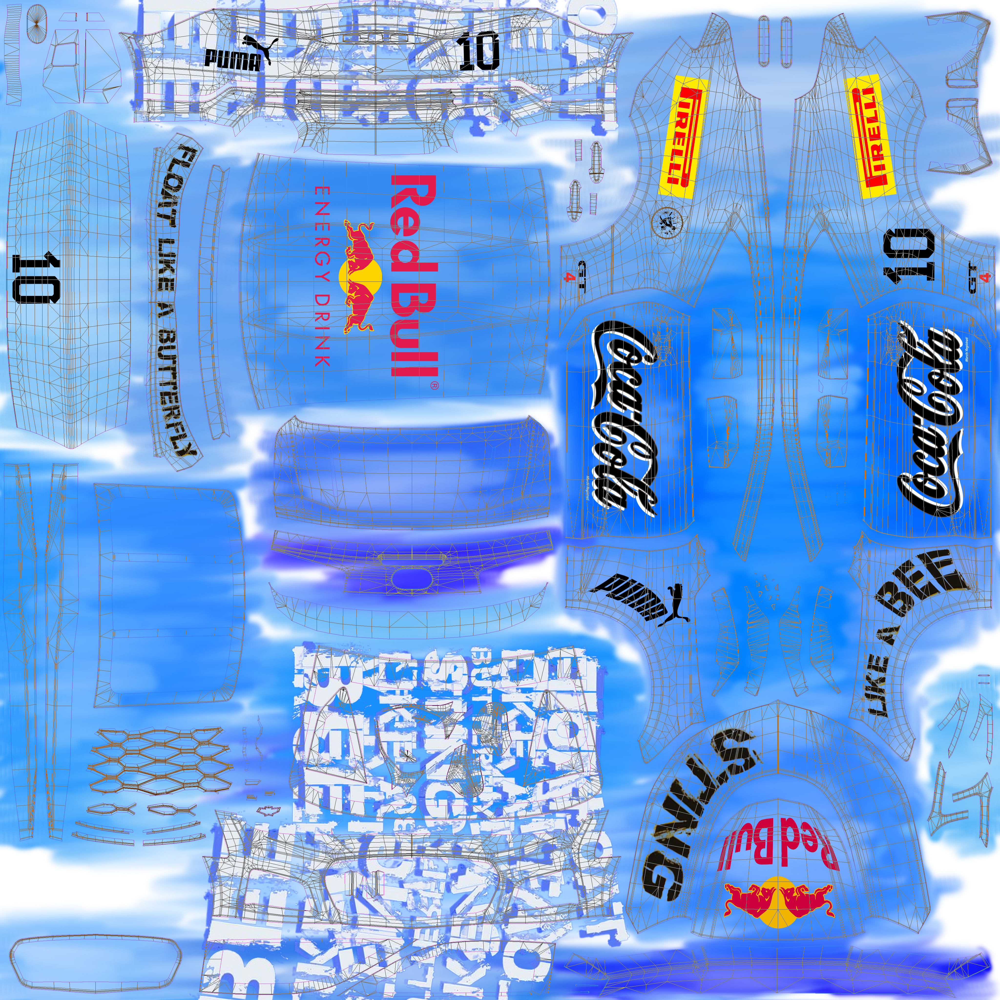
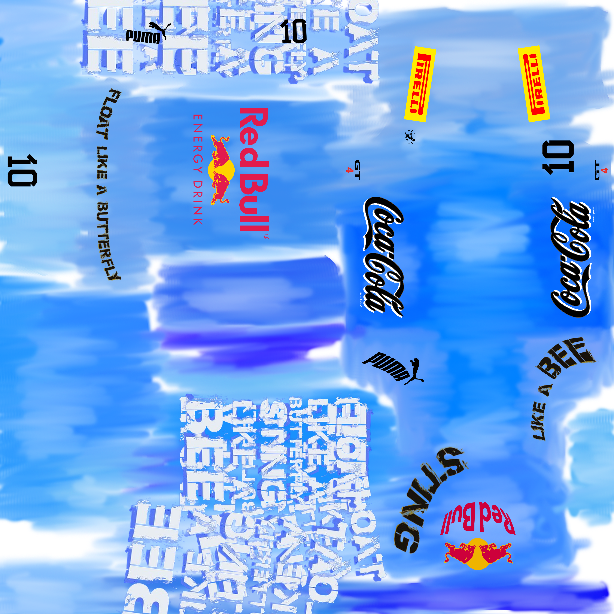

Livery Design
8.png)


Design Ideas
The livery started out with a mix of yellow, orange, and black, inspired by a famous movie character. But midway through, I inverted the colors, and the final look ended up with an ice-blue color scheme.
The quote “Float like a butterfly, sting like a bee” is Muhammad Ali’s line, capturing his unique style in the ring. It’s been referenced in movies like Rocky, where the character uses it to describe his own Ali-inspired boxing style.
Choice of Sponsors
- Red Bull is huge in extreme sports, especially in motorsports. They’ve got Red Bull Racing in Formula 1 and are all over high-energy events, so they’re a perfect fit for the racing scene.
- Pirelli is known for its high-performance tires and has been the exclusive tire supplier for Formula 1 since 2011. They’re a big name in GT and endurance racing too.
- Puma makes racing suits, gloves, and shoes that tons of drivers use, including in Formula 1. They’ve been working with racing teams for years, bringing quality gear to the track.
- Coca-Cola is recognized around the world and has been involved in all kinds of sports. While they’re not as big in motorsports as Red Bull or Pirelli, they’ve still supported racing events and helped engage fans globally.